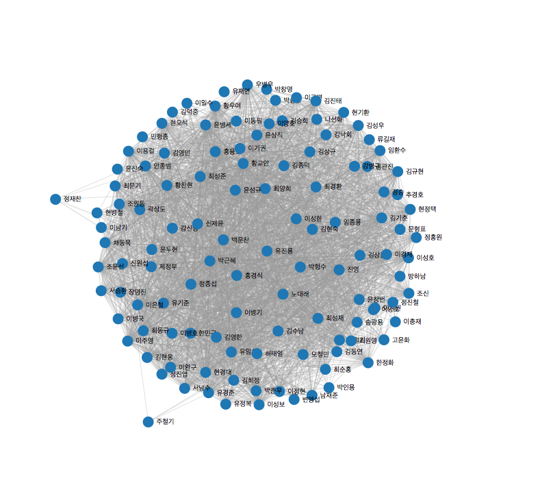

대한민국 제18대 대통령으로 당선된 박근혜 대통령이 지난 2년 9개월동안 어떤 이들을 각 부처의 수장으로 임명했는지 알아봤습니다. 최근 총선 출마를 앞두고 많은 수석과 장관들이 자리를 비우고 있는데요. 데이터는 김수남 검찰총장 내정자 뉴스가 나온 시점(11월 2일)까지만 모았습니다.
이들은 박근혜 대통령과 얼만큼 가까운 사람들일까요? 그리고 이들끼리는 또 어떻게 이어져 있을까요? 인맥의 중심에는 과연 누가 있을까요?
기준은 다음과 같습니다. 일단 박근혜 대통령이 임명했기 때문에 모든 사람들은 박 대통령과 기본적으로 1의 링크를 가집니다. 여기에 지역(TK 즉 대구경북 지역으로 한정했습니다. 경남이나 부산은 포함되지 않습니다)과 학연(서강대 동문), 혈연(박정희 전 대통령과 인연이 있었던 사람들, 또는 그 사람들의 자녀까지 포함)을 비롯, 당적(새누리당 소속)과 박근혜 후보 당시 대선 캠프, 싱크탱크인 국가미래연구원, 대통령 인수위원회 소속도 각각 1씩 링크를 갖게 됩니다. 정수장학회 소속과 같이 박정희 전 대통령과 연관된 기관의 도움(장학금 등)을 받거나 하는 경우에도 1씩 줬습니다. 피는 물보다 진하다지만, 모든 경우에 대해 가중치를 두지 않고 일정하게 1씩만 부여했습니다.
박 대통령을 제외한 인물들끼리의 링크에서는 같은 학교(고교, 대학)와 지역 출신, 같은 부처 소속, 연수원 경험, 같은 연구소, 검찰 라인과 법원 라인, 경찰 라인 등에 각각 1씩 링크를 주었습니다. 사실 함께 대검 중수부에서 일한 경우도 있고, 같은 검찰청이지만 기간이 다를 수도 있습니다. 하지만 사회에서의 '식구' 개념을 고려해 모두 1씩 셌습니다.
대상은 총 113명(박 대통령 포함)입니다. 일단 전체 데이터를 확인하면 다음과 같습니다.
이런, 데이터가 너무 많아 올챙이알처럼 동그랗게 뭉쳐버렸네요.(노드만 6000개를 넘어가다보니...) 시력이 아주 좋은 분은 눈치 채셨겠지만, 저 안에는 그 누구와도 이어져있지 않은 이가 딱 한 명 있답니다. (워터마크라고 해두죠...)
포스 데이터는 네트워크를 알아보기엔 좋지만 이렇게 노드의 수가 많아지면 오히려 버벅대고 더 복잡한 느낌이 듭니다. 물론 그들끼리는 엄청나게 연결돼있구나~ 정도를 파악할 수 있지요. 더불어 애니메이션이 정지되고 나면, 누가 네트워크의 왕이고 누가 아닌지를 어느정도는 파악할 수 있답니다. 아래 그림처럼요.
이 데이터(=삽질의 결과)를 가지고 만드는 새 그래프는 앞으로도 계속 이어집니다. 이것은 시작에 불과...